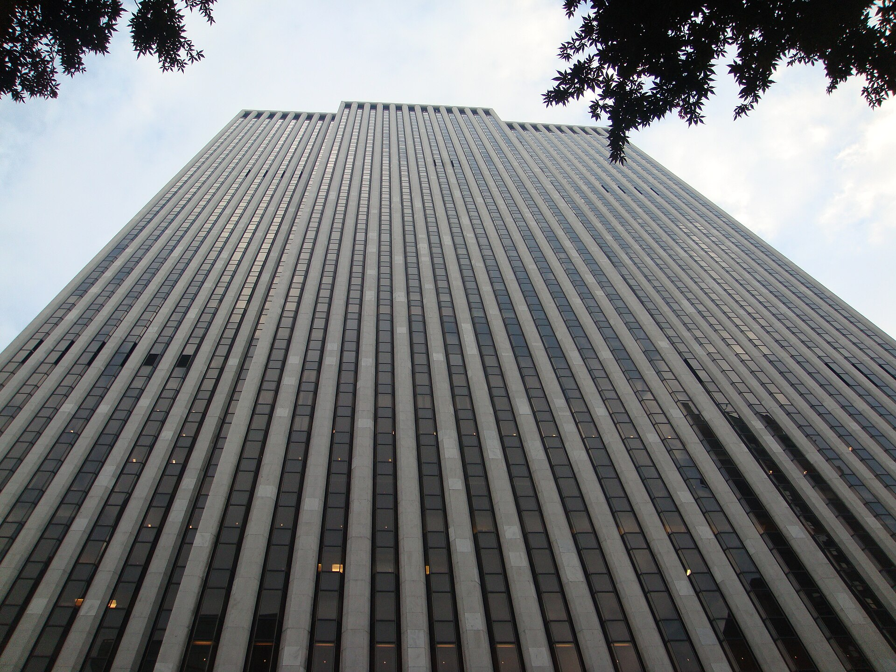
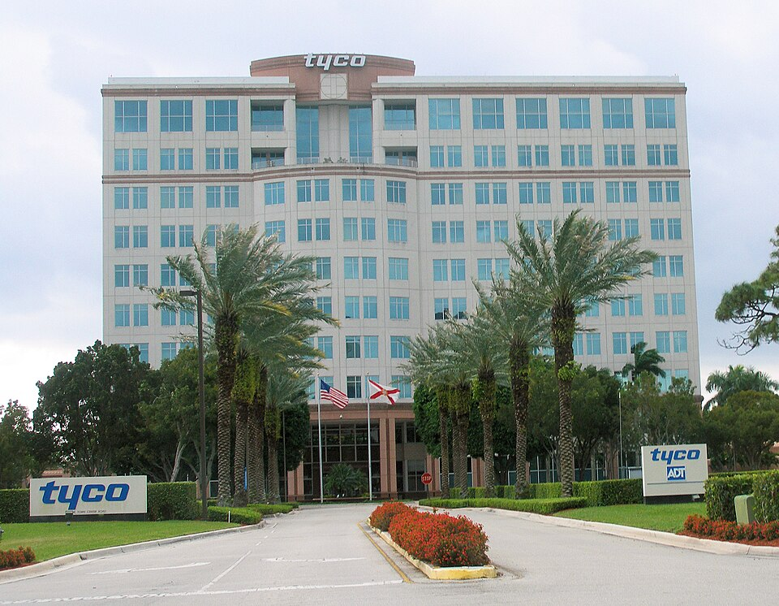
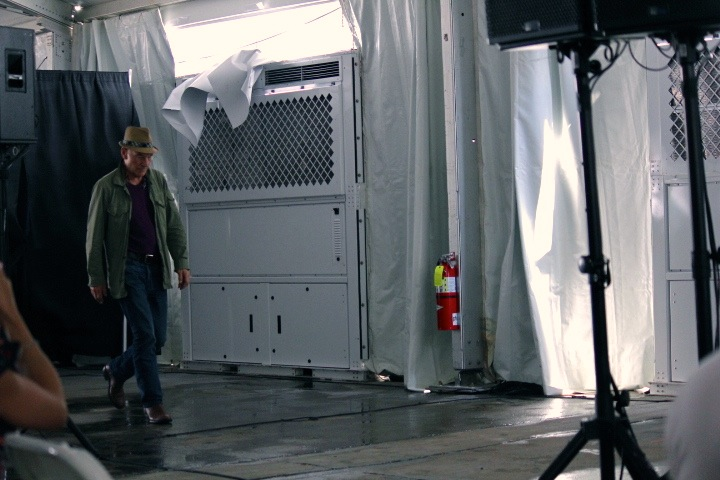

Vol. I · No. 155 · Friday, October 30, 2026 · 13 items · 8.4 min read
A 95-year-old law firm moves to close, Big Tech borrows to build AI, and a Boca Raton alarm company goes to an AI holding company.
Law & the Profession · New York
Weil Gotshal moves to dissolve after 95 years, promising staff 90 days’ pay as partners prepare to vote

767 Fifth Avenue, the General Motors Building, where Weil lists more than 500 lawyers. Pablo Costa Tirado / Wikimedia Commons
Weil, Gotshal & Manges, the New York firm with about 1,200 lawyers and more than $2 billion of revenue last year, plans to wind down after its management committee recommended dissolution to partners, Reuters reported Thursday. The partnership must still vote. Weil intends to close , advised by and restructuring counsel from Davis Polk.
In a message reported by Above the Law, the firm said associates, counsel, and staff who stay will receive up to 90 days of salary and benefits. Staff bonuses come in mid-December, and associates who remain through Jan. 1 are paid in early January. Lawyers were told to keep billing and collecting. More than 30 partners left this year, including members of the executive committee, and it is unclear what the firm owes partners under its , Reuters reported.
“We recognize that asking everyone to remain focused on their work during a period of such personal uncertainty is difficult.”
Weil leadership, message to lawyers, via Above the Law, Oct. 29
The unraveling took weeks. Merger talks with Willkie Farr broke down this month, and Ramona Nee backed away from succeeding longtime leader Barry Wolf. Days earlier Weil had told The Wall Street Journal that “no decision has been made to dissolve the firm.” Bloomberg columnist Matt Levine called it a , and David Lat wrote that Weil, which carried no debt, may be the most prestigious firm ever to collapse. Clients include Apple, Goldman Sachs and Dow.
Markets & AI · Seattle and Redmond
Amazon’s free cash flow runs $42 billion negative as Microsoft sells its first bonds since 2017 and Alphabet sheds $500 billion
Amazon said Thursday that free cash flow over the past 12 months was minus $42.4 billion, against $14.8 billion a year earlier, after $215.2 billion of capital spending, and that long-term debt reached $173.1 billion, up from $65.6 billion at the end of 2025. revenue grew 39% to $46.0 billion on total sales of $201.9 billion, and the shares fell as much as 9% after hours, Deadline reported.
Earlier, Microsoft sought at least $25 billion in 10 tranches, its , Bloomberg reported. Alphabet fell 12.6%, erasing about $500 billion, the on record, Platformer reported.
AI
Legal AI reaches for the firm’s memory
AI & Law · San Francisco
Harvey buys Aida, its fifth acquisition this year, to map how law firms’ knowledge fits together
Harvey has acquired Aida, a sales-execution startup founded by co-founder Piyush Prahladka and Atish Das Sarma, Artificial Lawyer reported Thursday, its fifth purchase of 2026 after Benchmark in July and Guardails in September. Terms were not disclosed. The team joins Harvey’s product and engineering groups to build firm-specific . Chief executive Winston Weinberg said unlocking that knowledge “will fundamentally change how they work.”
Markets & Deals
An AI holdco buys ADT, Siena loses its vote, and the ECB loses its president early
M&A · Boca Raton · South Florida
Kushner’s Thrive Holdings agrees to take Boca Raton’s ADT private for $15.3 billion, with Apollo funding the deal

The Boca Raton building that housed ADT under Tyco. Coolcaesar / Wikimedia Commons
ADT agreed Thursday to be acquired by for $10 a share in cash, a 45.6% premium to the unaffected Oct. 27 close, valuing the home-security company at about $7.6 billion in equity and $15.3 billion with debt, the companies said. Funds managed by committed all the financing, with no financing condition, and ADT shares rose 34%.
A runs to Nov. 28, and closing is expected in the first quarter of 2027. Cravath represents ADT and Kirkland & Ellis represents Thrive. Thrive, spun out of Josh Kushner’s Thrive Capital, counts OpenAI as a partner supplying models and engineers and plans to make ADT the base of a smart-home business, TechCrunch reported.
M&A · Siena
Monte dei Paschi shareholders reject their chief’s defense, clearing a path for Intesa’s €33 billion bid
Holders of about 60% of capital on Thursday rejected chief executive Luigi Lovaglio’s all-share counteroffers for Banco BPM and Banca Generali, after voting down a full merger with Mediobanca, Reuters reported. Intesa Sanpaolo’s offer is worth about €33 billion, and the ECB approved it this week. Intesa plans to sell about half of the bank’s roughly 1,200 branches to . Italy’s antitrust ruling is due in November.
Rates · Frankfurt and Tokyo
The ECB holds at 2.5% as Lagarde says she will leave nine months early, and the Bank of Japan holds 8 to 1
The European Central Bank kept its deposit rate at 2.50% on Thursday after two increases in five months, and Christine Lagarde said she will step down in February 2027, nine months before her term ends, The Irish Times reported. and Pablo Hernández de Cos are named as successors. The Bank of Japan held at 1.25% on Friday, with one member voting to raise, Reuters reported. A $44 billion auction cleared at 4.894%, MarketScreener reported.
Law & the Courts
A Senate seat in federal court, and a fraud dressed in the SEC’s seal
Election Law · Anchorage
The Justice Department amends its Alaska certification suit, adding a Supremacy Clause claim to moot three dismissal motions
The Justice Department filed an Thursday in its suit to block Alaska from certifying the Senate race if Sen. Dan Sullivan loses by fewer votes than went to , adding a Supremacy Clause count and asking Judge Sharon Gleason to deny three dismissal motions as moot, Democracy Docket reported. Gleason on Wednesday let the League of Women Voters and others intervene.
Enforcement · Washington
The SEC charges two firms that used fake SEC filings and a counterfeit agency seal to raise $130 million
The Securities and Exchange Commission on Thursday charged BG Wealth Sharing and DSJ Exchange with taking more than $130 million from tens of thousands of retail investors in over 40 states between October 2025 and June 2026 in a Ponzi-like crypto scheme. The two Colorado-incorporated, foreign-operated entities filed false and Form ADV documents and showed investors certificates bearing a fake seal, the agency said. It has removed the filings from its site.
The World
Tehran sits on a letter, Israel finishes counting, and Kyiv holds its fire on refineries
News · Tehran and Riyadh · cross-spectrum LCR
Iran confirms it has Vance’s letter but sends no reply as the Houthis claim strikes on six Saudi targets
Iranian news agencies said Thursday that Tehran had received a letter from Vice President JD Vance, delivered by Qatari mediators to , and had not replied. The letter proposes talks led by Vance, possibly next week in Qatar or Turkey, with the nuclear issue on the table from the start, The New York Times reported. Parliament Speaker said any deal requires acceptance of Iran’s seven conditions, Fox News reported.
The Houthis claimed attacks Thursday on six Saudi sites, including the Ras Tanura refinery, and airports in Riyadh and Dammam, Al Jazeera reported. Saudi Arabia said it intercepted two missiles over Riyadh. December Brent rose $1.20 to $116.08 early Friday, headed for a fourth monthly gain, after a tanker leaving Hormuz was hit by explosives, Reuters reported.
News · Jerusalem · cross-spectrum LCR
Israel’s final count leaves Netanyahu’s bloc at 53 and Eisenkot’s at 48, and Likud says the vote was ‘stolen’
With all votes counted, Prime Minister Benjamin Netanyahu’s bloc won 53 of 120 Knesset seats and Gadi Eisenkot’s 48, while Arab-led parties won a record 19 on 77.9% turnout, the Times of Israel reported. Likud rose to 27 seats after the count. Elections chief Noam Sohlberg ordered an inquiry after the Shin Bet passed him material on alleged foreign funding of Arab turnout, and Likud said the election was “stolen.” Qatar denied involvement. receives the results Wednesday.
Framing noteFox News gave extended treatment to a Channel 12 report that Qatari money drove Arab turnout; Al Jazeera said Likud “continues to promote unsubstantiated allegations.”
News · Kyiv · cross-spectrum LLC
Ukraine has paused strikes on Russian refineries under U.S. pressure, the Journal reports, as Russian attacks kill at least 20
Ukraine’s long-range units were told in mid-October that strikes on Russian refineries were effectively on hold until after the U.S. midterms, The Wall Street Journal reported Thursday, according to Reuters, which could not verify it. Russian attacks Thursday killed at least 20 people, 14 of them at a Dnipro railway platform. A local truce in occupied held into a third day, and ombudsman entered the town.
Entertainment & EASL
A stage actor who became a starship captain, and one sports desk at Skydance
Death · Los Angeles
Patrick Stewart, the Shakespearean actor who became Star Trek’s Captain Picard, dies at 86

Patrick Stewart in New York in 2013. Abbyarcane / Wikimedia Commons
Patrick Stewart, who played Captain Jean-Luc Picard for seven seasons of “Star Trek: The Next Generation” and Professor Charles Xavier in the “X-Men” films, died Wednesday at his Los Angeles home at 86, his spokeswoman said Thursday. She cited “a brief and poignant journey with Alzheimer’s Disease and .” His wife, Sunny Ozell, cared for him, Fox News reported.
Stewart came from the and returned to the stage throughout his career, earning a Tony nomination for “Macbeth” and Emmy nominations for “Moby Dick,” “The Lion in Winter,” “Extras” and “Hamlet.” He revived Picard for three seasons on Paramount+ from 2020. , he is survived by his children, Sophia and Daniel.
Sports Business · New York and Atlanta
Skydance merges CBS Sports and TNT Sports under one rights chief as several senior executives leave
David Berson, chairman of Skydance’s global sports group, named the leadership of the combined CBS Sports and TNT Sports in a memo Thursday, Front Office Sports reported, with Dan Weinberg running programming including and Craig Barry as chief content officer. TNT finance chief Sophia Constantinides, TNT Sports Ventures president Patrick Crumb and CBS Sports veteran Harold Bryant are leaving, and layoffs were confirmed without a number. The outlet discloses that invests in both it and Skydance.
Compiled by Matthew Yellin · mattyellin.com · Est. May 2026 · A cross-spectrum brief drawn each morning from wires, filings, and the trade press